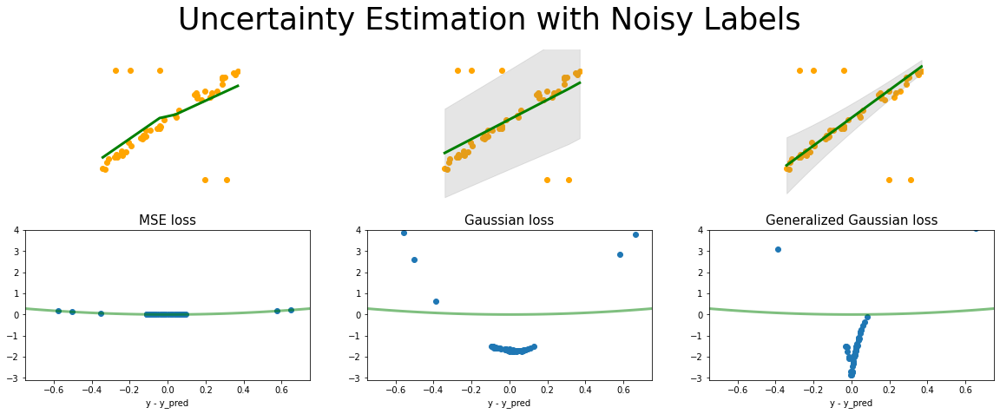
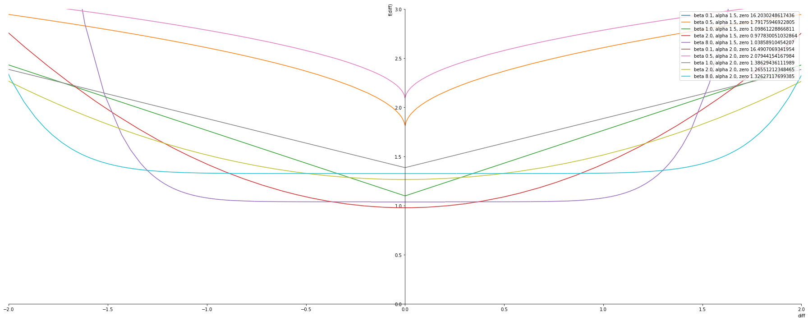
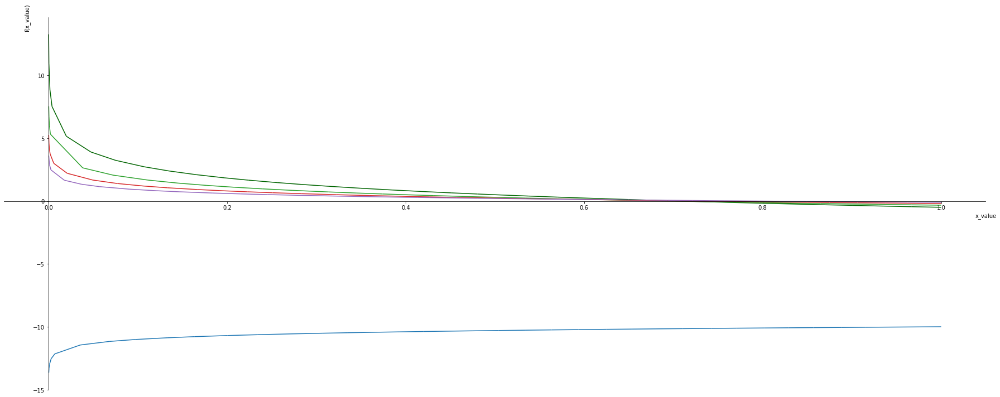

def GeneralGaussianNLLLoss(input, target, alpha, beta, eps=1e-06, reduction='none'):
# Inputs and targets much have same shape
input = input.view(input.size(0), -1)
target = target.view(target.size(0), -1)
if input.size() != target.size():
raise ValueError("input and target must have same size")
# Second dim of scale must match that of input or be equal to 1
alpha = alpha.view(input.size(0), -1)
if alpha.size(1) != input.size(1) and alpha.size(1) != 1:
raise ValueError("alpha is of incorrect size")
# Second dim of scale must match that of input or be equal to 1
beta = beta.view(input.size(0), -1)
if beta.size(1) != beta.size(1) and beta.size(1) != 1:
raise ValueError("beta is of incorrect size")
# Check validity of reduction mode
if reduction != 'none' and reduction != 'mean' and reduction != 'sum':
raise ValueError(reduction + " is not valid")
# Entries of var must be non-negative
if torch.any(alpha < 0):
raise ValueError("alpha has negative entry/entries")
# Entries of var must be non-negative
if torch.any(beta < 0):
raise ValueError("beta has negative entry/entries")
# Clamp for stability
alpha = alpha.clone()
beta = beta.clone()
with torch.no_grad():
alpha.clamp_(min=eps)
beta.clamp_(min=eps)
# Calculate loss (without constant)
#loss = (torch.log(2*scale) + torch.abs(input - target) / scale).view(input.size(0), -1).sum(dim=1)
loss = (torch.abs(input - target)/alpha)**beta - torch.log(beta) + torch.log(2 * alpha ) + torch.lgamma(1/beta)
# Apply reduction
if reduction == 'mean':
return loss.mean()
elif reduction == 'sum':
return loss.sum()
else:
return loss
Uncertainty Estimation for Regression with Outliers(Noisy) Labels
We have looked into the problem of uncertainty estimation for regression with noisy labels in our paper “Maximum Likelihood Uncertainty Estimation: Robustness to Outliers [1]”.
In this paper we looked into the problem of likelihood based uncertainty estimation in the presence of noisy labels. We motivated the problem with the help of a toy regression problem and showed how Normal loss function doesnot estimate the correct uncertainty in the presnce of outliers.
For a summary you can check our blog on the comparison of Normal loss function and Heavy-tailed loss function here.
There is still a problem of selecting which heavy tailed distribution to use . So inorder to solve this problem we plan to use the “Generalized Normal Distributuion/Exponential Power Distribution”. The distirbution has a parameter beta which determines the shape of the distirbution and fluctuates between different tail levels. For example beta=2 the pdf is equal to a normal distribution and beta=1 the pdf is equal to a laplace distribution. With decreasing beta the tail increases and it resemble higher tails like Cauchy etc.
We studied the pdf and the Negative log likelihood of the distirbution in our previous blog Exponential-Power-Distribution
In this blog, we construct the loss function in pytorch with NLL of the distribution and compare the uncertainty predictions with Gaussian loss function.
[1] Nair, Deebul S., Nico Hochgeschwender, and Miguel A. Olivares-Mendez. “Maximum Likelihood Uncertainty Estimation: Robustness to Outliers.” (2022).
Pytorch loss implementation
Below is the pytorch loss implementation of the Generalized Normal loss function.
PDF of Generalized Normal Function
\[pdf = \frac{\beta e^{- \left(\frac{\left|{diff}\right|}{\alpha}\right)^{\beta}}}{2 \alpha \Gamma\left(\frac{1}{\beta}\right)} \]
Negative Log Likelihood of the PDF
\[nll = - log(pdf) \] \[nll = - \log{\left(\frac{\beta e^{- \left(\frac{\left|{diff}\right|}{\alpha}\right)^{\beta}}}{2 \alpha \Gamma\left(\frac{1}{\beta}\right)} \right)} \]
Simplifying it, we get the loss as
\[ loss = \left(\frac{\left|{diff}\right|}{\alpha}\right)^{\beta} - \log{\left(\beta \right)} + \log{\left(2 \alpha \Gamma\left(\frac{1}{\beta}\right) \right)} \]
Toy Dataset with Noise
Pytorch Model for Training
- For MSE loss the output shape is 1
- For Gaussian loss the output shape is 2. (output and variance)
- For Generalized loss function the output shape is 3. (output, alpha, beta)
# this is one way to define a network
class Net(torch.nn.Module):
def __init__(self, n_feature, n_hidden, n_output):
super(Net, self).__init__()
self.hidden = torch.nn.Linear(n_feature, n_hidden) # hidden layer
self.predict = torch.nn.Linear(n_hidden, n_output) # output layer
def forward(self, x):
x = F.relu(self.hidden(x)) # activation function for hidden layer
x = self.predict(x) # linear output
return x
# this is one way to define a network
class GaussianNet(torch.nn.Module):
def __init__(self, n_feature, n_hidden, n_output):
super(GaussianNet, self).__init__()
self.hidden = torch.nn.Linear(n_feature, n_hidden) # hidden layer
self.predict = torch.nn.Linear(n_hidden, n_output) # output layer
self.variance = torch.nn.Linear(n_hidden, 1) # variance layer
def forward(self, x):
x = F.relu(self.hidden(x)) # activation function for hidden layer
out = self.predict(x) # linear output
var = F.softplus(self.variance(x))
return out, var
class GeneralGaussianNet(torch.nn.Module):
def __init__(self, n_feature, n_hidden, n_output):
super(GeneralGaussianNet, self).__init__()
self.hidden = torch.nn.Linear(n_feature, n_hidden) # hidden layer
self.predict = torch.nn.Linear(n_hidden, n_output) # output layer
self.alpha = torch.nn.Linear(n_hidden, 1) # variance layer
self.beta = torch.nn.Linear(n_hidden, 1) # variance layer
#torch.nn.init.xavier_uniform_(self.variance.weight)
#torch.nn.init.normal_(self.variance.weight, mean=1.0)
#torch.nn.init.normal_(self.variance.bias, mean=0.0)
def forward(self, x):
x = F.relu(self.hidden(x)) # activation function for hidden layer
out = self.predict(x) # linear output
alpha = F.softplus(self.alpha(x))
beta = F.softplus(self.beta(x))
return out, alpha, betamse_loss_func = torch.nn.MSELoss() # this is for regression mean squared loss
# Fit a linear regression using mean squared error.
regression_mse = Net(n_feature=1, n_hidden=10, n_output=1) # RegressionModel()
params_mse = regression_mse.parameters()
optimizer_mse = torch.optim.Adam(params_mse, lr = 0.001)
gaussian_loss_func = torch.nn.GaussianNLLLoss( reduction='none')
# Fit a linear regression using mean squared error.
regression_gaussian = GaussianNet(n_feature=1, n_hidden=10, n_output=1) # RegressionModel()
params_gaussian = regression_gaussian.parameters()
optimizer_gaussian = torch.optim.Adam(params_gaussian, lr = 0.001)
generalized_loss_func = GeneralGaussianNLLLoss
# Fit a linear regression using mean squared error.
regression_generalized = GeneralGaussianNet(n_feature=1, n_hidden=10, n_output=1) # RegressionModel()
params_generalized = regression_generalized.parameters()
optimizer_generalized = torch.optim.Adam(params_generalized, lr = 0.001) Training and Output
Here you can see:
- Generalized Normal distribution has the best fit.
- Not only that the distribution has the best uncertainty estimation, avoiding the outliers.
- The loss plot you can see, how the loss for normal and generalized the outliers are separated from the inlier data
tensor(0.0331, grad_fn=<MeanBackward0>) tensor(-1.2061, grad_fn=<MeanBackward0>) tensor(-1.3674, grad_fn=<MeanBackward0>)
Appendix
alpha, beta, diff = sym.symbols('alpha, beta, diff')
pdf = ( beta / (2 * alpha * sym.gamma(1 / beta)) ) * sym.exp(-((sym.Abs(diff)/alpha)**beta))
nll_pdf = -1* sym.log(pdf)pdfprint_latex(pdf)\frac{\beta e^{- \left(\frac{\left|{diff}\right|}{\alpha}\right)^{\beta}}}{2 \alpha \Gamma\left(\frac{1}{\beta}\right)}nll_pdfprint_latex(nll_pdf)- \log{\left(\frac{\beta e^{- \left(\frac{\left|{diff}\right|}{\alpha}\right)^{\beta}}}{2 \alpha \Gamma\left(\frac{1}{\beta}\right)} \right)}nll_pdf.simplify()nll_pdf.subs([(beta,0.5), (diff,0),(alpha, 1.0)])nll_pdf = 1 * (sym.Abs(diff)/alpha)**beta + sym.log(2 * alpha) * sym.log(sym.gamma(1 / beta)) - sym.log(beta)
nll_pdfnll_pdf.subs([(beta,0.5), (diff,0),(alpha, 1.0)])print_latex(nll_pdf)\left(\frac{\left|{diff}\right|}{\alpha}\right)^{\beta} - \log{\left(\beta \right)} + \log{\left(2 \alpha \Gamma\left(\frac{1}{\beta}\right) \right)}\[ \left(\frac{\left|{diff}\right|}{\alpha}\right)^{\beta} - \log{\left(\beta \right)} + \log{\left(2 \alpha \Gamma\left(\frac{1}{\beta}\right) \right)} \]
alphas = [1.5, 2.0]
betas = [ 0.1, 0.5, 1.0, 2.0, 8.0]
plot_exponential_power_distribution(alphas, betas, nll_pdf, plot_ylim=(0,3))
Generalized log loss function
Noisy labels in classification can be addressed
- With increaes in base the los reduces .
- When base is 1 the
x_values, base = sym.symbols('x_value, base')
negative_log = -1*sym.log(x_values, base) - (1/base)
xlim = 1e-21
p1 = symplot.plot(negative_log.subs([(base, 2)]), (x_values,-1,1), show=False, line_color='darkgreen')
p1[0].label = ''
for i, b in enumerate([0.1, 1, 3, 5, 10]):
p = symplot.plot(negative_log.subs([(base, b)]), (x_values,-1,1), show=False, line_color=color[i%len(color)])
p1.append(p[0])
p1.show()
negative_log.subs([(base,1), (x_values,0)])